Une voiture de 2002 que j'ai remise en état moi-même, puis un projet d'étude et de rétro-ingénierie de son calculateur moteur, autour du bioéthanol E85. Un câble, deux ordinateurs, et chaque chiffre vérifié.
Le moteur aspirait de l'air par une petite fissure : le calculateur ajoutait de l'essence pour compenser. Un test à la fumée trouve la fuite ; un collier serré, et tout revient à la normale.
Vidange, filtres, pompe à essence, débitmètre, radiateur, pompe à eau, thermostat, bougies : chaque pièce neuve est notée avec sa référence et sa date.
Un câble sur la prise de diagnostic : mon PC lit ce que mesure chaque boîtier électronique. Avec NCS Expert, j'étudie aussi le codage du confort : verrouillage, feux.
Une copie complète de son logiciel, puis ses cartographies lues une par une et son programme analysé : je comprends comment il dose le carburant et l'allumage.
Quatre versions d'un fichier pour l'E85, préparées et vérifiées : seules les valeurs prévues changent, contrôlées par mes programmes et par des tests sur émulateur. Pour rouler à l'E85, j'envisage un boîtier homologué.
BMW 520i E39 berline, 2002, boîte manuelle. Valeurs constructeur d'après la fiche technique d'auto-data.net, puis ce que j'ai lu et mesuré sur ma voiture.
En simple
Une BMW Série 5 de 2002 : une grande berline, un moteur à six cylindres en ligne de 2,2 litres et une boîte manuelle. Le cerveau du moteur est un petit ordinateur, le calculateur Siemens MS43 : c'est lui que j'ai reprogrammé.
Moteur
Moteur
M54B22, 6 cylindres en ligne
Cylindrée
2 171 cm³
Puissance
170 ch à 6 100 tr/min
Couple
210 Nm à 3 500 tr/min
Transmission et freinage
Transmission
Propulsion
Boîte
Manuelle, 5 rapports
Freins
4 disques
Jantes et pneus
15 pouces aujourd'hui (205/65 R15) ; changement de jantes prévu (la maquette montre des 17 pouces)
Gabarit
Longueur × largeur × hauteur
4 775 × 1 800 × 1 435 mm
Empattement
2 830 mm
Poids
1 495 kg
Coffre
460 L
Réservoir
70 L
Performances et consommation
Vitesse maximale
226 km/h
0 à 100 km/h
9,1 s
Urbaine
12,2 L/100 km
Extra-urbaine
7,1 L/100 km
Mixte
9,0 L/100 km
Ma voiture, lue et mesurée
Kilométrage
Environ 168 000 km (novembre 2026)
Logiciel du calculateur
430037 (référence 7511570)
Injecteurs
D'origine, environ 64 à 65 % d'ouverture à fond au SP98
Limiteur
Vers 6 500 tr/min
Encyclopédie
Le tour du propriétaire.
Touchez un point pour découvrir l'équipement ; portes, capot et coffre s'ouvrent au clic. Puis installez-vous au volant.
Glissez pour tourner autour de la voiture · clic droit pour déplacer
Place du conducteur : glissez pour regarder autour de vous
La voiture en 14 grands groupes, de la mécanique à la carrosserie : 86 fiches en tout. Dépliez le détail d'un groupe pour ouvrir la fiche d'une pièce : sa place dans la voiture, la pièce seule en 3D et, quand elle existe, sa photo réelle.
La maquette reste une simplification : de nombreux petits éléments — durites, colliers, faisceaux électriques, capteurs, visserie — ne sont pas représentés.
Un vrai compartiment moteur de E39 à moteur M54, et la maquette vue sous le même angle, capot ouvert. Faites glisser le curseur pour passer de l'un à l'autre.
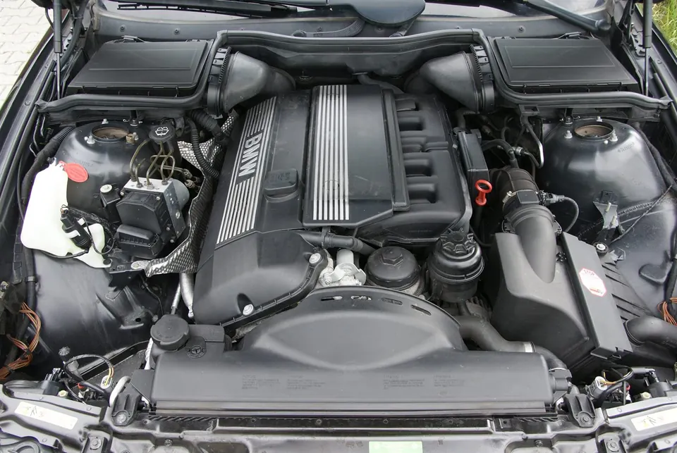
PhotoMaquette
À gauche du curseur, la photo ; à droite, la maquette.
Index des pièces
Toutes les pièces.
Une fiche par pièce : sa place dans la voiture et la pièce seule, en 3D. Dépliez une catégorie.
La maquette reste une simplification : de nombreux petits éléments — durites, colliers, faisceaux électriques, capteurs, visserie — ne sont pas représentés.
Le moteur
Le M54 en pièces.
Une maquette du six cylindres dans sa carrosserie : faites-la tourner, ouvrez la vue éclatée, cliquez une pièce pour ouvrir sa fiche. Portes, capot et coffre s'ouvrent au clic ; le cache moteur se retire.
La maquette reste une simplification : de nombreux petits éléments — durites, colliers, faisceaux électriques, capteurs, visserie — ne sont pas représentés.
Simulation · point mort
Liquide de refroidissement
Carburant (départ)
Carburant (retour au réservoir)
Huile moteur
Ils circulent quand le moteur tourne (bouton Accélération).
Affichage
Chargement de la vue 3D…
M54B22 — 6 cylindres en ligne, 2.2L
Clic gauche : tourner · clic droit : déplacer · cliquez puis molette, ou pincez, pour zoomer · survolez ou touchez une pièce
Carrosserie : modèle « BMW E39 Free » de Black Snow (CC BY 4.0), ramené à ma 520i — mécanique modélisée pour ce site
Partie 2 · La remise en état · août au 25/11/2026
La méthode
Mesure, hypothèse, vérification.
Une seule modification à la fois, puis relecture des valeurs avant de conclure. C'est la règle qui évite de remplacer trois pièces pour une panne qui n'en demandait qu'une.
En simple
À l'achat, le moteur respirait de l'air par une fissure : le calculateur devait ajouter de l'essence pour compenser. J'ai mesuré, cherché, réparé, puis remesuré. Une seule réparation à la fois, pour savoir laquelle a vraiment marché.
01 · Mesure
Le calculateur ajoute de l'essence des deux côtés : +8,6 % / +6,3 % au ralenti fin septembre, et environ +6,8 % / +4,6 % en moyenne sur le roulage du 08/10. Codes P0171 et P0174 : mélange trop pauvre.
02 · Hypothèse
Le banc 1 a environ 2 points d'avance : une prise d'air côté banc 1. Le débitmètre de 2001 lit moins d'air qu'attendu à fort débit (environ 7 %, estimé) : un contributeur commun.
03 · Vérification
Test fumée le 14/10 : la fuite est au manchon d'admission, légèrement fissuré, que je resserre avec un collier Rilsan. Avec le débitmètre neuf et le joint DISA remplacé : 0 % / 0 % au relevé suivant.
Atelier
Les chantiers
Ce qui a été fait.
Août 2026
16/08/2026
L'achat
Une 520i phase 2 de 2002, boîte manuelle, achetée à environ 164 000 km. Pas de rouille, des factures d'entretien, et un contrôle technique passé proprement après l'achat.
Le 23/08, premières captures du VANOS en direct.
Les défauts connus à l'achat
Plastiques de réglage des phares cassés.
Défaut du capteur de position d'arbre à cames.
Plastique du bouton d'antibrouillard déclipsé.
Première immatriculation · 21/08/2002
Moteur M54B22 · calculateur Siemens MS43
Vers le 23/08/2026 · 164 292 km
Vidange et capteur d'arbre à cames d'échappement
Vidange à 164 292 km : moteur rincé au Liqui Moly Engine Flush (300 ml), puis huile Motul 8100 X-cess 5W40 avec un filtre Mann-Filter HU 925/4 x, et additif céramique Liqui Moly Cera Tec 3721.
Au même moment, le capteur de position d'arbre à cames d'échappement, en défaut à l'achat, est remplacé par un Hella 6PU 009 121-701.
Huile · Motul 8100 X-cess 5W40
Filtre à huile · Mann-Filter HU 925/4 x
Rinçage · Liqui Moly Engine Flush 300 ml
Additif · Liqui Moly Cera Tec 3721
Capteur · Hella 6PU 009 121-701
Engine Flush, avant la vidange.
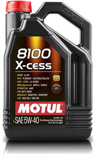
Motul 8100 X-cess 5W40.Cera Tec 3721.
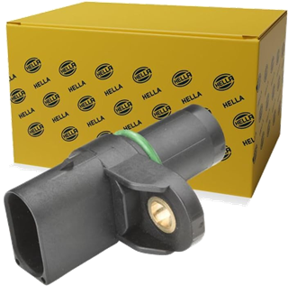
Capteur Hella 6PU 009 121-701.
Fin août 2026 · quelques jours après la vidange
Filtre à essence Purflux EP200 et durites
Quelques jours après la vidange : filtre à essence Purflux EP200 à régulateur intégré, avec 3 durites neuves et leurs colliers.
Entretien prévu ensuite : un filtre à essence chaque année.
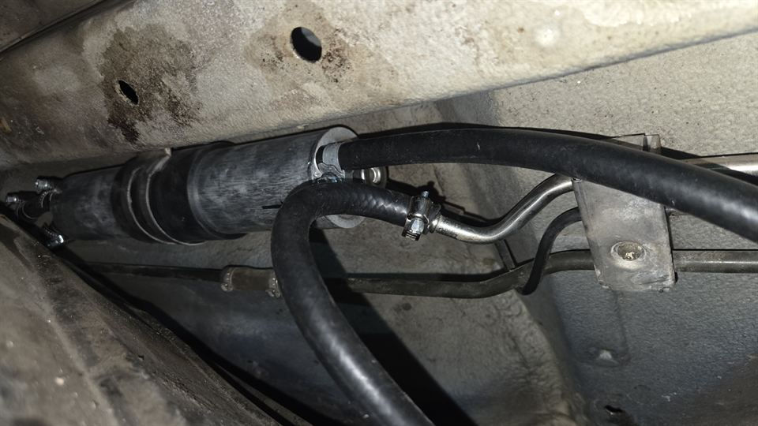
Photo réelle : le filtre Purflux et ses durites neuves, sous la voiture.
Septembre 2026
Fin août · septembre 2026
Les premiers codes : mélange pauvre
La valise V519 affiche P0171 et P0174 : mélange pauvre sur les deux bancs. Le calculateur ajoute de l'essence pour compenser de l'air qui entre quelque part.
+8,6 %correction banc 1 au ralenti
+6,3 %correction banc 2 au ralenti
+12,5 %jusqu'à cette valeur en charge
Le 27/09, recherche sur la pompe à essence AEM 340, compatible E85, avant de la commander.
03/09/2026
Autoradio bloqué : tableau de bord démonté
L'autoradio d'origine était bloqué. Pour le débloquer, la façade du tableau de bord et la garniture de porte sont démontées.
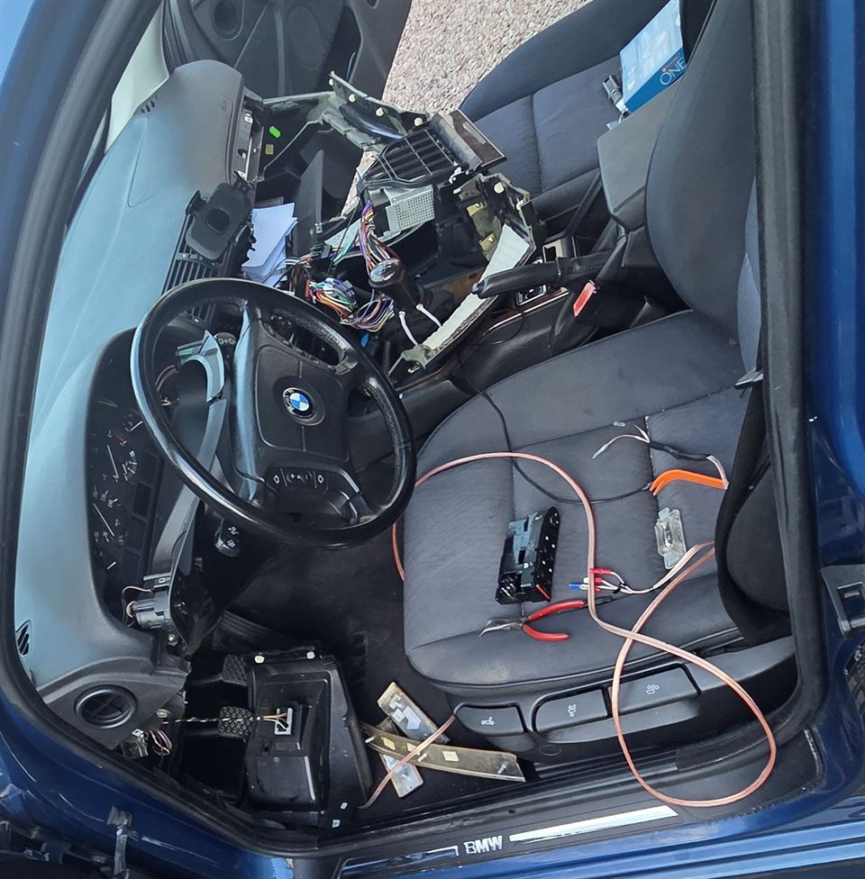
Photo réelle : le tableau de bord démonté pour débloquer l'autoradio.
Octobre 2026
03/10/2026
Pompe à essence AEM 340 L/h
La pompe d'origine fatiguait : démarrages difficiles, plusieurs coups de clé, perte de puissance. Le diagnostic n'a pas été fait au doigt mouillé : la pression de rampe a été vérifiée au kit manomètre — trop basse.
Remplacement par une AEM 340 L/h (réf. 50-1220), choisie pour sa compatibilité E85. Un calage juste après le montage venait des raccords sertis faits maison, pas de la pompe. Depuis : ralenti normal, reprises meilleures.
Leçon : jamais de raccordement sur le faisceau d'origine sans adaptateur — une polarité inversée fait tourner la pompe à l'envers.
AEM 340 L/h · 50-1220
Pression attendue : ~3,5 bar (spécification)
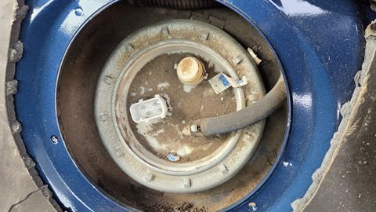
17h42 : accès à la pompe par la trappe sous la banquette.
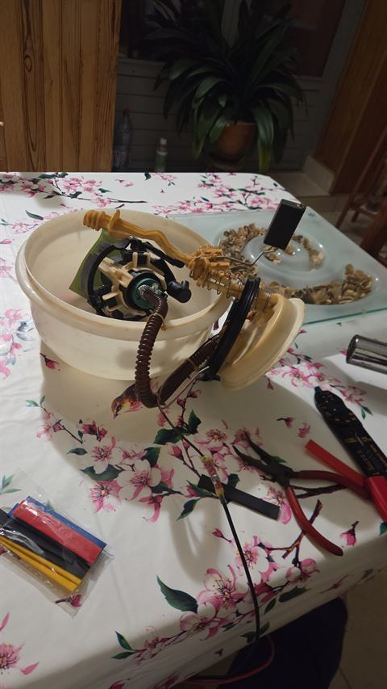
21h08 : le module démonté pour poser la pompe AEM 340, compatible E85.
08 — 09/10/2026
Diagnostic du mélange pauvre
Le 08/10, le câble K+DCAN arrive (commandé début octobre) : premiers logs du calculateur. Log complet (MS430DS0, environ 110 points) et lectures à la valise V519. Les corrections carburant montent des deux côtés, le banc 1 devant.
42 %ouverture des injecteurs à 4 646 tr/min : sains, loin du seuil de 85 %
125 g/sdébit d'air maximal lu (à 6 313 tr/min), contre 128 à 140 g/s attendus : le débitmètre sous-lit
+2 ptsd'écart banc 1 / banc 2 : le signe d'une prise d'air localisée
Les deux causes coexistent sans se contredire : une prise d'air côté banc 1 et un débitmètre vieilli. Le test fumée tranchera la première ; un débitmètre neuf, la seconde.
Photo réelle : le code P0171 lu au V519.
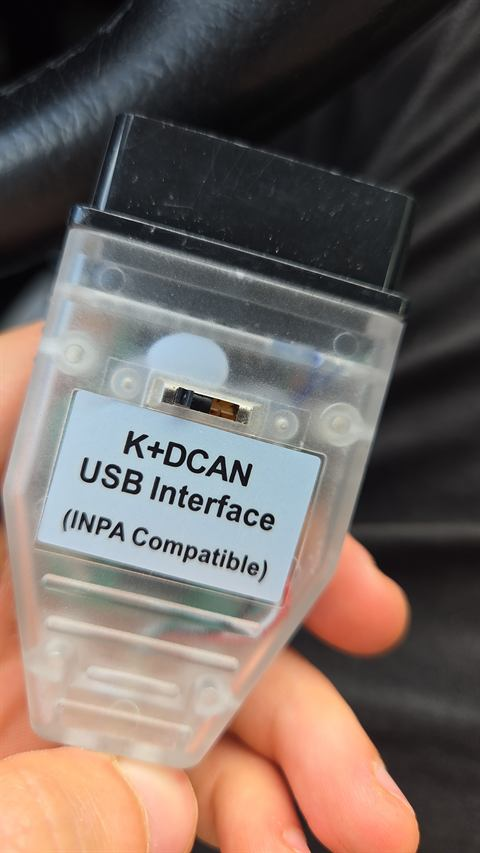
08/10 : le câble K+DCAN reçu, avec son interrupteur K-Line / D-CAN.La prise OBD-II à 16 broches de l'interface.
11/10/2026
Nettoyage de la vanne de ralenti (ICV)
La vanne de ralenti Bosch, logée sous l'admission, est déposée pour être nettoyée.
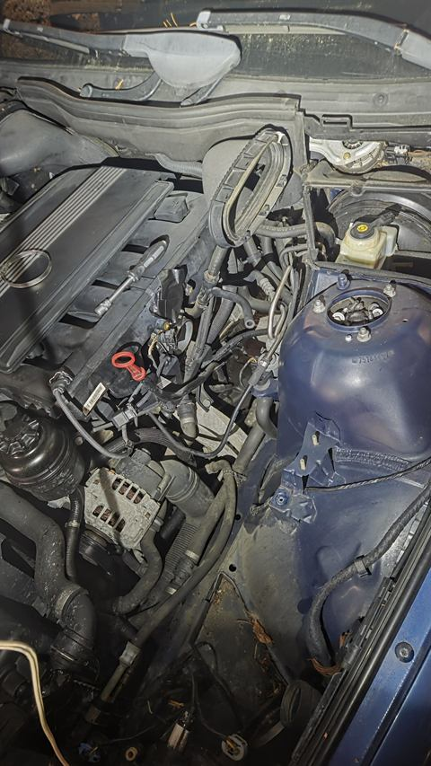
L'accès à l'ICV, sous l'admission.
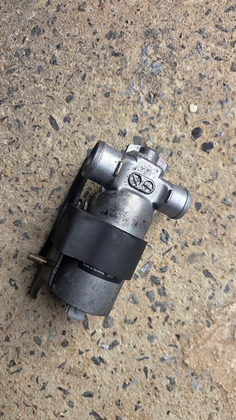
La vanne de ralenti déposée pour nettoyage.
13/10/2026
Débitmètre neuf et joint DISA
Le débitmètre d'origine Siemens 5WK9 605 (BMW 13 62 1 432 356), daté de 2001, est remplacé par un Pierburg 7.07759.09.0. Le même soir, le joint de la DISA — légèrement aplati — est changé.
Correction long terme du jour (LTFT) : +3,1 % / 0,0 %. Le banc 2 est revenu à zéro, le banc 1 garde un reste : la prise d'air n'est pas encore trouvée.
Débitmètre neuf · Pierburg 7.07759.09.0
Ancien · Siemens 5WK9 605 (2001)
Le débitmètre mesure la masse d'air : environ 2,8 g/s au ralenti et 125 g/s au maximum, à pleine charge (logs du 08/10, ancien débitmètre).La DISA change la longueur du chemin de l'air. Son joint aplati était un candidat côté banc 1 : remplacé le 13/10.
14/10/2026
Test fumée : la fuite est trouvée
Avec la machine à fumée d'un ami, moteur froid et arrêté, durite obturée côté filtre : la fumée suit le chemin de l'air et ressort là où l'air non mesuré entrait. Verdict : fuite au manchon d'admission, légèrement fissuré.
Pas de pièce neuve : je serre le manchon avec un collier Rilsan. Une réparation de fortune, mais qui tient très bien dans le temps. L'air qui entrait sans passer par le débitmètre ne fausse plus le dosage.
Manchon débitmètre → papillon : fuite
Joint DISA · durites CCV · bouchons du collecteur · tube de jauge
Réparation · collier Rilsan sur le manchon d'origine
18/10/2026
Réfection complète du refroidissement
Le 2 octobre, le liquide s'échappait par le bouchon à chaud : un bouchon neuf de 1,4 bar qui ventile, c'est une surpression réelle. Le radiateur fuyait — patch époxy le 6 octobre, en attendant les pièces.
Le kit complet est monté : radiateur Nissens 60648A, pompe à eau Meyle 313 011 2001, thermostat Mahle TM 13 97, puis purge soigneuse du circuit.
Radiateur · Nissens 60648A
Pompe à eau · Meyle 313 011 2001
Thermostat · Mahle TM 13 97
Froid : clapet fermé, petit circuit. Chaud : la cire se dilate, le clapet s'ouvre, le radiateur entre en jeu. Sur le roulage du 08/10, le liquide est resté entre 83 et 98 °C.
18/10 : thermostat piloté Mahle et pompe à eau Meyle neufs (préventif).
23 · 31/10/2026
Pneus et huile : les points à suivre
Les pneus arrière sont presque aux témoins, usés au centre (surgonflage). Leur remplacement passe en priorité ; en attendant, moins de 100 km/h.
Le reste du suivi
La voiture roule sur la roue de secours depuis le 10/10. Vibration à 110 km/h : la roue de secours est le premier suspect.
Huile : consommation nulle en conduite normale. Une mesure prise voiture penchée n'est pas valable. Le recyclage des vapeurs d'huile (CCV) est soupçonné.
27/10 : pas de nettoyage des pistons pour l'instant. Ordre retenu : jauge à froid sur sol plat, huile dans le manchon, puis compression.
Bougies : NGK BKR6EQUP, 31 ± 2 Nm, filets secs (remplacées le 19/11 par des Denso IK20TT).
Novembre 2026
06/11/2026
Premier diagnostic complet au PC
INPA et un câble K+DCAN, en lecture seule : rien n'est effacé ni écrit. Un trajet de 20 km enregistré à 5 mesures par seconde. À chaud, le moteur est sain.
8 074mesures sur le trajet, sans coupure
1,00correction lambda des deux bancs en roulant, moteur chaud
64,9 %ouverture maximale des injecteurs (12,18 ms à 6 399 tr/min)
Les défauts trouvés
Ratés cylindres 4 et 5, à froid seulement, intermittents.
Sonde de sortie de radiateur à −48 °C en permanence (innocentée le 13/11).
Mélange riche banc 1, mémorisé une fois au ralenti à 66 °C.
Transpondeurs des clés 0 et 2 faibles, LED d'alarme en coupure, capteur de recyclage d'air en coupure.
Ce qui va bien
VANOS actif des deux côtés : admission de 112° à 81°, échappement de −105° à −87°.
Moteur entre 93 et 97 °C, huile à 100 °C au maximum, batterie entre 13,6 et 13,9 V en roulant.
Ralenti stable à 750 tr/min.
Pied au plancher, le calculateur ne corrige plus avec les sondes : la valeur reste alors figée à 1,00.
08/11/2026
Lecture complète et copie du calculateur
Tous les modules sont interrogés, puis le logiciel du calculateur est copié avec MS4x Flasher. Verdict : logiciel 430037, et pas 430069 comme supposé. Le même jour, les ratés à froid sont pris sur le fait, et 16 options de confort sont codées et gardées avec NCS Expert. Le codage
8modules qui répondent
23 ratéstous sur le cylindre 4, entre 11 et 15 °C, au ralenti
537 kg/hdébit d'air maximal à pleine charge (149 g/s)
Le détail de la journée
8 modules répondent, dont le moteur (MS43), la fermeture, l'antidémarrage, le volant, la climatisation, le combiné et l'éclairage.
Copie du calculateur : 524 288 octets, référence BMW 7511570. L'original est gardé en lecture seule ; on travaille sur une copie.
Ratés : 23 en 20 s environ, puis plus aucun jusqu'à 98 °C. Aucun sur le cylindre 5 ce jour-là.
Pleine charge : injecteurs ouverts à 64,2 % au maximum, limiteur vers 6 500 tr/min.
Logiciel · 430037
Référence calculateur · 7511570
11/11/2026
Les cartographies, lues une par une
La copie du calculateur est ouverte dans TunerPro avec la définition du logiciel 430037. Rien n'est modifié : on lit ce que fait le calculateur d'origine.
+9 à +10 %d'essence en plus à pleine charge (+12,5 % à 6 480 tr/min)
+15 %limite haute de l'adaptation du mélange
−12 %limite basse
Comparaison avec un autre logiciel
Comparé à un fichier d'exemple 430069 : démarrage et avance identiques, enrichissement à pleine charge plus faible sur ma voiture.
Les adresses diffèrent : toute modification devra utiliser la définition 430037.
Correction additive limitée à ±0,40.
13/11/2026
Bobines échangées et sonde de radiateur innocentée
Pour savoir si les ratés suivent la bobine, deux paires de bobines sont échangées. La sonde de sortie de radiateur, crue morte, est mesurée : elle est bonne.
1,93 kΩsonde de radiateur, tiède
5 Vsur la prise du faisceau
−4,39 %correction sur chaque banc en fin de trajet
Démarrage à 28,5 °C, trop chaud pour voir les ratés : test à refaire à froid.
Le −48 °C venait d'une valeur inutilisable du bloc de mesures sur ce logiciel. Le débrancher crée bien un défaut : le calculateur lit la sonde.
Défauts notés puis effacés (airbag exclu).
La pompe à eau additionnelle avait été débranchée par erreur : elle explique probablement un défaut de la climatisation.
La pleine charge n'a pas été enregistrée : l'enregistreur n'était pas lancé, puis la liaison avec le câble a échoué.
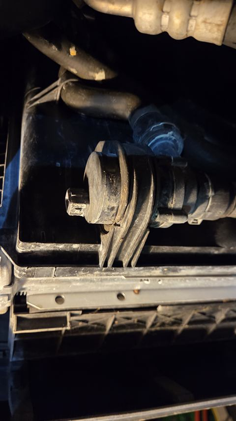
La sonde de température de sortie du radiateur, celle qui affichait -48 °C.
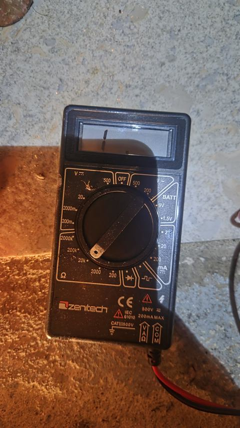
Le multimètre prêt pour mesurer la sonde.
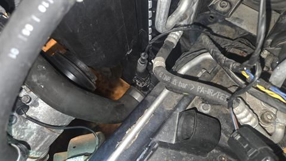
Le connecteur de la sonde de radiateur.
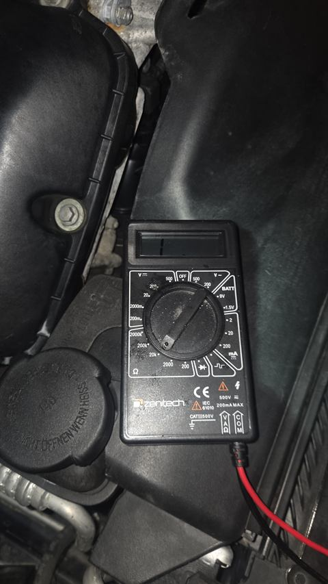
Mesure sur la sonde ; le bouchon de vase de 1,4 bar est visible.
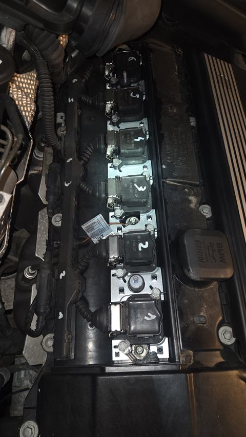
Les bobines numérotées, avant l'échange.
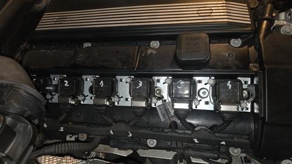
Les bobines échangées 1↔4 et 2↔5, pour voir si les ratés des cylindres 4 et 5 suivaient la bobine.
14/11/2026 · 18h31
Démarrage à froid, bobines échangées
Moteur à 10,5 °C, enregistreur lancé avant le démarrage. Aucun raté. L'irrégularité à froid reste sur les cylindres 4 et 5 : elle n'a pas suivi les bobines. Les suspects deviennent la bougie, l'injecteur ou une prise d'air de ces cylindres. C'est un indice faible, pas une preuve.
Irrégularité maximale par cylindre, entre 11 et 15 °C
Cylindre
1
2
3
4
5
6
Irrégularité
1,20
0,37
1,51
2,09
2,10
0,99
À chaud, des pics de 1,2 à 3,3 n'apparaissent qu'en transition, sur plusieurs cylindres. Corrections mémorisées : −1,64 % banc 1, −4,47 % banc 2.
15 au 18/11/2026
Analyse du programme et fichier flex
Le programme du calculateur est analysé avec Ghidra : où l'adaptation s'applique, comment le démarrage est calculé. Vérifications en lecture seule le 16/11. Le 18/11, le fichier flex v1 est construit sur le PC fixe.
Les six NGK BKR6EQUP déposées avaient été posées le 31/03/2021 à 153 311 km selon la facture : environ 15 000 km de service. À l'œil : becs clairs, couleur beige ; une seule a le filetage brun doré (probablement le cylindre 3, la première de la rangée étant le cylindre 1).
Les Denso IK20TT neuves sont posées le 19/11, serrées à 22 Nm (valeur Denso), et les bobines Bosch 0 221 504 004 reprennent leur ordre d'origine. Par les puits de bougie, le haut des pistons est noir de calamine (aspect courant à ce kilométrage, estimé). Contrôle conseillé vers 30 000 km ou 3-4 ans.
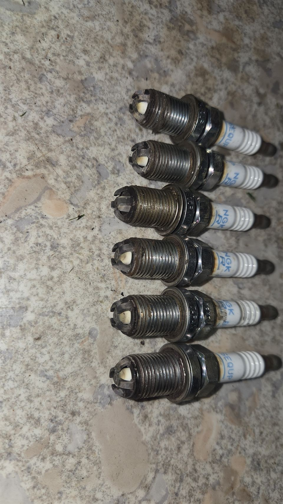
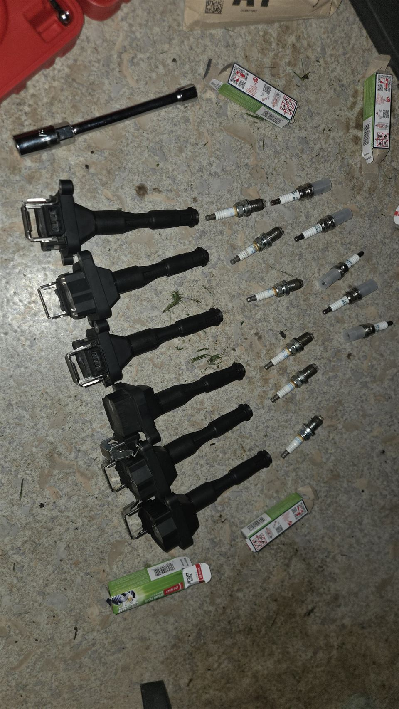
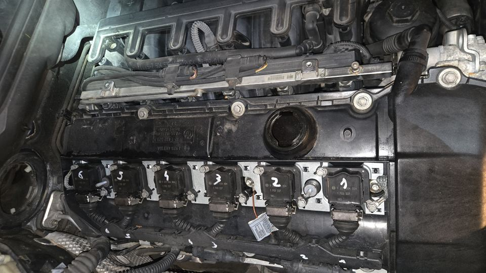
Photos réelles : les anciennes NGK ; les bobines, les Denso neuves et la clé à bougie ; les bobines remises dans l'ordre.
19/11/2026 · 18:24 à 18:42
Pression d'essence au manomètre
La pression est vérifiée avec un manomètre monté sur un T, a priori entre la sortie du filtre et le moteur, pendant qu'un log enregistre le régime. Pourquoi un T : la valve de la rampe a le filetage d'une valve de pneu, et le raccord du kit ne pouvait pas l'ouvrir. Conditions : eau à 51 °C, batterie à 13,8-13,9 V, 0 raté sur les 6 cylindres.
3,1 barcontact mis, moteur arrêté
3,5 barstable au ralenti, et constante pendant les accélérations à vide jusqu'à 6 107 tr/min (0 raté, KR 0)
2,9 barà 18:42, dix minutes après l'arrêt (3,0 bar juste après, à 18:32)
Cohérent avec les 3,5 bar de BMW, moteur à vide et voiture à l'arrêt.
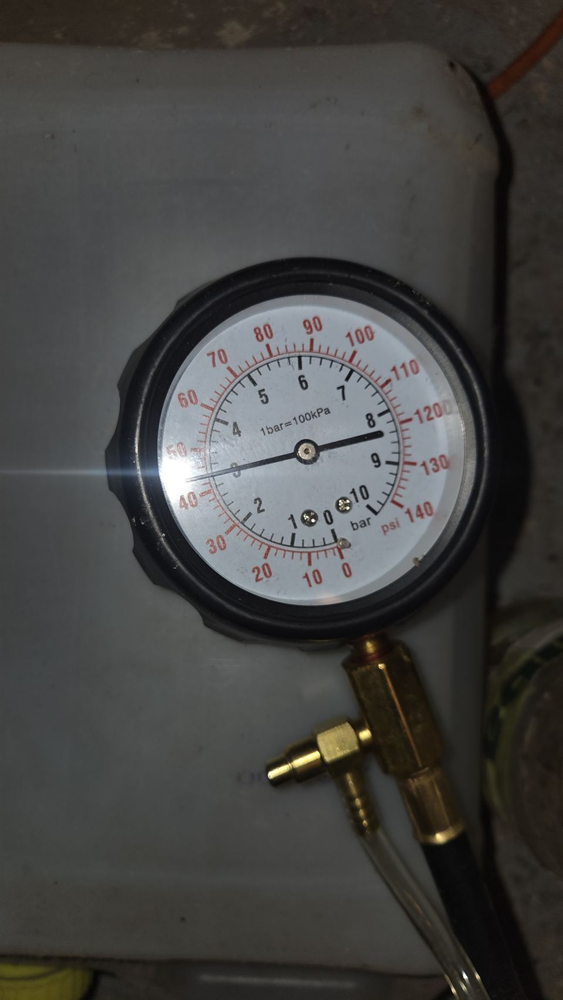
Photos réelles : le montage sur un T ; le cadran contact mis, environ 3,1 bar (45 psi).
Pression d'essence du 19/11
Relevés au manomètre sur un T, voiture à l'arrêt, et régime enregistré pendant les essais à vide.
24/11/2026
Une prise orpheline et deux bobines échangées
Une prise débranchée pend à l'avant gauche : 5 V sur deux fils, donc l'entrée d'un capteur. La lecture des défauts de la climatisation la relie au capteur de qualité d'air (recyclage automatique), en circuit ouvert : le capteur n'est plus là. Aucun effet sur le moteur.
1seul défaut présent dans la climatisation : ce capteur ; aucun défaut moteur
2 ↔ 5bobines des cylindres 2 et 5 échangées vers 21:10, bougies inchangées
Le détail
Bobines : depuis le 24/11, le cylindre 2 porte la bobine n°5 et le cylindre 5 la n°2, les autres à leur place. Aucun effet mesurable : ces deux cylindres étaient déjà les plus calmes au ralenti chaud.
Test du bouchon d'huile retiré au ralenti : le régime change et la régulation réagit, le reniflard fonctionne. Les ratés comptés pendant ce test sont provoqués par l'essai.
Les pièces montées · état au 25/11/2026
Tout ce qui a été changé.
Chaque pièce neuve posée depuis l'achat, dans l'ordre, avec sa référence et sa date. Le manchon d'admission, lui, n'a pas été changé : un collier Rilsan le referme. Quand seule la date de commande est connue, elle est indiquée comme telle : ce n'est pas la date de pose. Les photos sont celles des produits (fabricants et boutiques) ; les photos réelles sont dans les chantiers.
Vers le 23/08/2026
Capteur d'arbre à cames d'échappement
Hella 6PU 009 121-701
Vers le 23/08/2026 · 164 292 km
Huile moteur
Motul 8100 X-cess 5W40
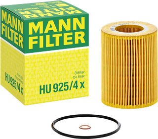
Vers le 23/08/2026 · 164 292 km
Filtre à huile
Mann-Filter HU 925/4 x
Vers le 23/08/2026
Rinçage moteur
Liqui Moly Engine Flush 300 ml
Vers le 23/08/2026
Additif d'huile céramique
Liqui Moly Cera Tec 3721
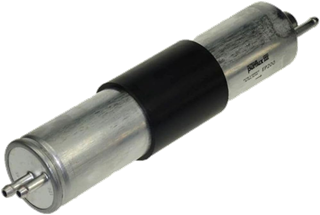
Fin août 2026
Filtre à essence à régulateur
Purflux EP200
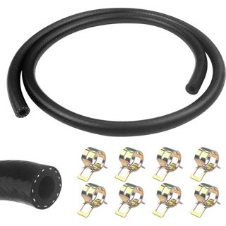
Fin août 2026, avec le filtre
Durites d'essence (×3) et colliers
Référence non notée · photo d'illustration
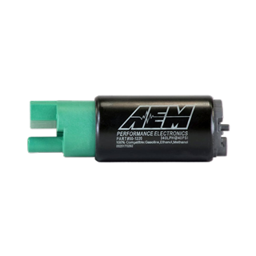
03/10/2026
Pompe à essence 340 L/h, compatible E85
AEM 50-1220
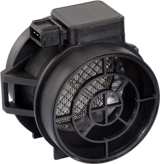
13/10/2026
Débitmètre d'air
Pierburg 7.07759.09.0
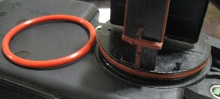
13/10/2026
Joint de la DISA
Référence non notée · photo d'illustration
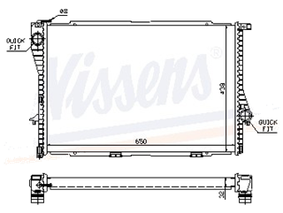
18/10/2026
Radiateur
Nissens 60648A
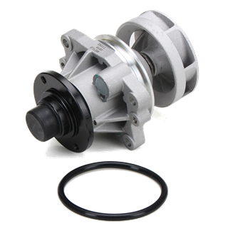
18/10/2026
Pompe à eau
Meyle 313 011 2001
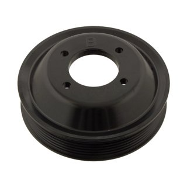
Commandée le 28/09/2026
Poulie de pompe à eau
febi 30125
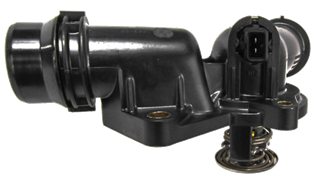
18/10/2026
Thermostat piloté
Mahle TM 13 97
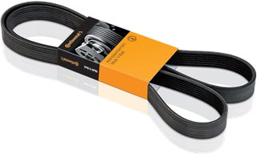
Commandée le 12/10/2026, reçue le 13/10
Courroie d'accessoires
Continental 6PK1548
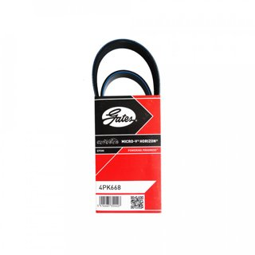
Commandée le 11/10/2026
Courroie (4 nervures)
Gates 4PK668
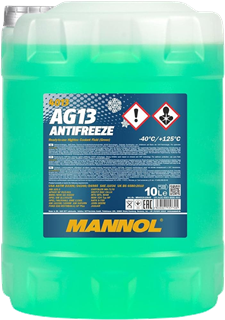
Commandé le 14/09/2026
Liquide de refroidissement
Mannol MN4013, 10 L
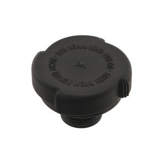
Commandé le 14/09/2026, posé avant le 02/10
Bouchon de vase d'expansion, 1,4 bar
febi 12205
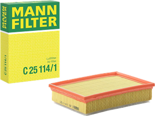
Commandé le 27/09/2026
Filtre à air
Mann-Filter C 25 114/1
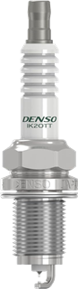
19/11/2026
Bougies d'allumage (×6)
Denso IK20TT
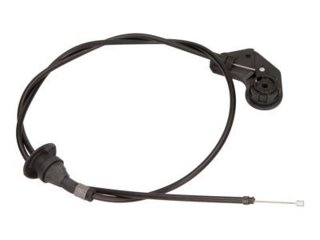
Commandé le 19/11/2026
Câble d'ouverture du capot
BMW 51 23 8 176 595
Le résultat
Retour à zéro.
Les corrections long terme (LTFT) disent combien d'essence le calculateur ajoute pour compenser. Après l'intervention, il n'a plus rien à corriger. Le 25/10, le dossier est clos : il retire même un peu d'essence, avec un écart stable entre les bancs.
Dans le calculateur moteur (le DME, ici un Siemens MS43), cette correction en pourcentage s'appelle MUL (multiplicative). Une seconde, l'ADD (additive), ajoute ou retire une petite quantité fixe : elle pèse surtout au ralenti.
Évolution des corrections long terme au ralenti
Relevé
Banc 1
Banc 2
27/09 · valise V519, au ralenti
+8,6 %
+6,3 %
08/10 · log Deep OBD, moyenne (MUL)
+6,8 %
+4,6 %
13/10
+3,1 %
0,0 %
Après intervention · relevé ponctuel
0 %
0 %
25/10 · suivi
−3,9 %
environ −1 %
08/11 · INPA, moteur chaud (MUL)
−3,57 %
−3,85 %
+3,1 %
LTFT banc 1
0,0 %
LTFT banc 2
De +3,1 % / 0,0 % (13/10) à 0 % / 0 % après intervention — relevé ponctuel.
Les relevés
Les relevés, en vrai.
Données AVANT réparation : roulage du 08/10/2026, log MS430DS0 de Deep OBD, 109 mesures de 18:41 à 18:49, tracées telles quelles.
Corrections carburant
Positives = le calculateur ajoute de l'essence pour compenser un mélange pauvre.
VANOS : consigne contre réel
Admission et échappement, en degrés vilebrequin : la position réelle suit la consigne.
Sondes lambda
Tension des 4 sondes, en volts (VKAT = avant catalyseur, NKAT = après). Les sondes amont basculent entre pauvre et riche ; sur ce log, les sondes aval oscillent presque autant (écart-type ~0,32 V contre ~0,35 V). Les courbes sont présentées telles quelles, sans conclusion sur l'état des catalyseurs.
Températures
Liquide de refroidissement, huile (modélisée) et air admis, en °C.
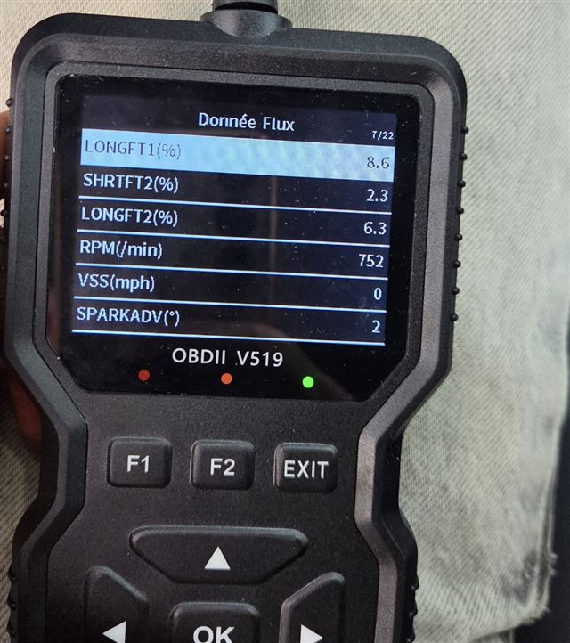
La valise V519
Photo réelle : LONGFT1 +8,6 %, LONGFT2 +6,3 % au ralenti (752 tr/min). La dérive continuait, banc 1 devant.
Partie 3 · Les outils
Les outils
Lire la voiture sans rien casser.
En simple
Une voiture, c'est plein de petits ordinateurs qui se parlent : moteur, éclairage, fermeture des portes, tableau de bord. Avec un câble branché sous le volant, mon PC portable peut les écouter, et parfois leur donner un nouveau réglage. Mon PC fixe, lui, ne touche jamais la voiture : il analyse et vérifie.
1 seul PCbranché à la voiture. L'autre analyse et prépare
4 fichiersdu calculateur préparés du 18 au 23/11, chacun vérifié par un programme
16 optionsde confort codées et gardées avec NCS Expert le 08/11
5 / smesures par seconde au plus avec mon enregistreur, contre une toutes les 0,8 s au mieux au téléphone
La voiture
8 boîtiers électroniques qui répondent, dont le calculateur moteur Siemens MS43.
Le câble K+DCAN
De la prise de diagnostic (OBD) au port USB, une vingtaine d'euros.
Le PC portable
Le seul branché à la voiture : INPA, Tool32, MS4x Flasher, NCS Expert et mon enregistreur.
Le PC fixe
Jamais branché : TunerPro, Ghidra et mes scripts. Il prépare et contrôle chaque fichier.
Les deux PC échangent par des dépôts privés : logs, lectures du calculateur et notes, tous datés.
Ce que fait chaque logiciel
INPA et EDIABAS
Lire
Les écrans de diagnostic de BMW : valeurs en direct (régime, températures, corrections) et défauts de chaque module.
Mon enregistreur
Enregistrer
Un script qui parle à EDIABAS et enregistre un trajet complet, jusqu'à 5 mesures par seconde. Il refuse toute commande qui écrit.
MS4x Flasher
Copier
Copie complète du calculateur, pour l'étudier sur une copie, jamais sur l'original.
NCS Expert
Coder le confort
Lit et modifie les options de confort de chaque module : verrouillage, éclairage, essuie-glaces.
TunerPro
Voir les cartographies
Ouvre une copie du calculateur avec la définition du logiciel 430037 : chaque table, en chiffres et en 3D.
Ghidra
Comprendre le programme
Lit le programme du calculateur pour savoir comment chaque table est vraiment utilisée.
Les logiciels, en vrai
Captures faites sur le PC portable le 25/11/2026, voiture non branchée : ce sont les écrans d'accueil. Les écrans de diagnostic en direct seront ajoutés après une séance câble branché.
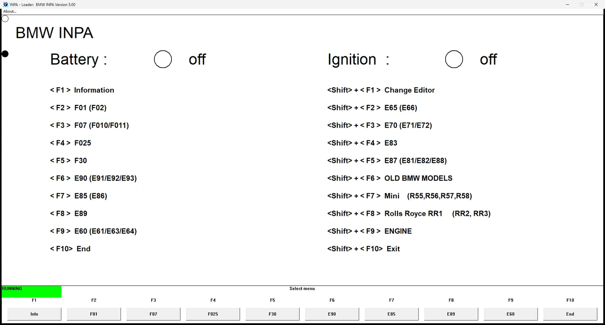
INPA · le menu de départ ; batterie et contact sur « off » : pas de câble.
Mon enregistreur · en simulation sur PC : les valeurs affichées sont inventées par le mode test.
Le codage avec NCS Expert 08/11/2026
En simple
Beaucoup de réglages de confort sont des cases à cocher cachées dans les boîtiers de la voiture. NCS Expert sait les lire. J'ai sauvegardé chaque boîtier, coché quelques cases, puis relu pour vérifier que seules celles-là avaient changé.
13 casesModule de fermeture et de confort (ZKE3)
Verrouillage automatique en roulant, au-dessus de 16 km/h, pour les quatre clés.
Ouverture sélective : un appui sur la télécommande ouvre la porte conducteur, deux appuis toutes les portes, pour les quatre clés.
Double clignotement au déverrouillage.
Feux de détresse quand l'alarme se déclenche.
Mode panique : en maintenant un bouton de la télécommande, l'alarme sonne et les vitres se ferment.
Position service des essuie-glaces, pour changer les balais facilement.
3 casesModule d'éclairage (LCM III)
Feux de jour européens, avec les anneaux des phares.
Feux de position avant en clignotants d'appoint : les anneaux accompagnent les clignotants.
Durée d'impulsion du contrôle des ampoules changée, un essai pour les feux de recul à LED.
Une quatrième case, les feux stop atténués servant de feux de position, a été essayée puis remise d'origine le soir même.
Ces options figurent dans les données de codage de BMW pour ce module ; leur étude fait partie du même projet, et chaque module a été sauvegardé avant toute écriture.
0 caseCombiné d'instruments (KOMBI39C)
Toutes ses options ont été décodées le 21/11, en lecture seule. Rien n'y est écrit : la correction de la consommation affichée a été étudiée dans le calculateur moteur (version v0e), sans toucher au combiné.
La méthode et les noms exacts des options
Pour chaque module : lecture du codage actuel, sauvegardée avant toute écriture, puis écriture et relecture. Le module d'éclairage a été écrit deux fois le même soir : 4 cases, puis une remise d'origine.
ZKE3 (fichier de codage GM3.C05) : relecture identique à l'écrit, 13 cases changées. VERRIEGELN_AUT_AB_X_KM/H et VERRIEGELN_XKM/H_SENDER_2 à _4 (la clé 1 l'avait déjà) ; ZV_SELEKTIV et SEL_ZV_SENDER_1 à _4 ; QUIT_OPT_ENTSCH ; ALARM_OPT_WARNBLINKER ; PANIK_MODUS ; ABKLAPPSTELLUNG.
LCM III (LCM.C18) : TAGFAHRLICHT_ECE, SL_VORNE_ALS_ZUSATZ_BLK, PULS_TIME_OPTION ; BL_ALS_SL_DIMMEN écrit puis remis à « non actif ».
Combiné (KMB_E39.C07) : options listées à partir des données de codage, sans câble, sur le PC fixe.
Le seuil du verrouillage automatique (16 km/h) était déjà réglé d'usine : seule l'option est activée.
La chaîne de diagnostic
Câble K+DCAN (puce FTDI) entre la prise OBD et le PC portable.
EDIABAS et INPA : le moteur de communication de BMW et ses écrans de diagnostic. Ils parlent à chaque module, dont le calculateur moteur (le DME).
MS4x Flasher : copie complète du calculateur.
TunerPro : lecture des cartographies sur une copie, sur le PC fixe.
Deep OBD sur Android : les premiers logs, le 08/10, avec le même câble.
L'enregistreur maison
Un script PowerShell qui parle à EDIABAS : bloc moteur à chaque tour, les autres valeurs moins souvent.
Liste blanche : seuls les jobs de lecture sont autorisés. Les commandes d'effacement, de test actif ou de programmation sont refusées.
Ajouts du 14/11 : avance réelle, recul pour cliquetis, sonde de sortie de radiateur et niveau d'essence lu au combiné.
Défauts relus au début et à la fin. Incidents de communication datés. Arrêt propre sans clavier.
Depuis le 25/11 : reconnexion automatique quand la liaison avec le câble se perd.
Tout est testé en simulation sur le PC fixe avant d'aller à la voiture.
Deux PC, une règle
Le PC portable est le seul branché à la voiture : lecture, logs, copie du calculateur.
Le PC fixe ne touche jamais la voiture : analyse, calculs, préparation, documentation.
Chaque chiffre est revérifié dans le fichier brut avant d'être noté. Les erreurs corrigées sont gardées dans un journal.
Préparer et vérifier un fichier, outil par outil
MS4x Flasher 1.6.1 : copie complète du calculateur, pour travailler sur une copie.
La définition XDF 430037 v1.15, et Ghidra 12.2 pour lire le programme.
construire_flex.py : construit le fichier depuis l'original et la liste validée, refuse d'écraser, vérifie l'empreinte.
ms43_verif.py : contrôle que seules les valeurs de la liste changent, et refuse toute modification du programme.
Un émulateur pour exécuter le code du mode de démarrage au volant, sur PC uniquement.
À l'atelier : manomètre d'essence sur un T.
Le code
Les scripts génériques sont publics : e39-ediabas-tools sur GitHub. Lanceur INPA portable en un clic, enregistreur de trajet, lecture de jobs EDIABAS et analyse de trajet, sans aucun logiciel BMW dedans.
Les données de la voiture (logs, copie du calculateur, notes) restent dans des dépôts privés.
Partie 4 · Étude du calculateur · 08 au 23/11/2026
Étude et rétro-ingénierie du calculateur
Le calculateur et l'E85.
Du 08 au 23/11/2026 : j'ai copié le logiciel du calculateur Siemens MS43, je l'ai lu et compris, puis j'ai préparé et vérifié des fichiers qui le rendraient capable d'accepter aussi bien le SP98 que l'E85, sans capteur d'éthanol. Ce qui est marqué « estimé » est un calcul, pas une mesure.
En simple
L'E85 contient surtout de l'alcool (de 60 à 85 % selon la saison), le reste est de l'essence. Pour faire le même travail, il en faut environ 25 à 40 % de plus. J'ai étudié comment apprendre au calculateur à injecter plus, et à se corriger seul selon le carburant : SP98, E85 ou un mélange des deux. Chaque changement est vérifié par des programmes avant d'être retenu.
4.0Les 4 fichiers, en un coup d'œil du 18 au 23/11/2026
Chaque version est un fichier construit sur le PC fixe à partir de la copie du calculateur, puis vérifié par un programme : seules les valeurs prévues changent, le programme du calculateur reste identique octet par octet, et l'original est toujours gardé.
18-19/11 · flex v1
Injecter plus, apprendre seul
×1,297
Plus de carburant sur les 6 cylindres, et une plage d'adaptation élargie pour accepter du SP98 à l'E85. Démarrage réglé entre les deux.
4.1Le principe : un flex sans capteur décidé le 15/11, fichier construit le 18/11/2026
L'E85 demande environ 25 à 40 % de carburant en plus que le SP98, selon sa teneur en éthanol (60 à 85 %). Sans capteur d'éthanol, le calculateur ne sait pas ce qu'il y a dans le réservoir : il le découvre par les sondes lambda, et son adaptation long terme par banc, la MUL (correction multiplicative), apprend l'écart.
Le fichier « flex v1 » multiplie donc la base d'injection par 1,297 et élargit la plage d'adaptation vers le bas. Au SP98, la MUL devrait retirer environ 23 % ; à l'E85 d'été, ajouter environ 8 % ; la butée haute d'origine (+15 %) n'est pas touchée (plage calculée).
Avance, pleine charge, VANOS, ralenti, antidémarrage et programme sont inchangés. Le 15/11, les analyses des deux PC arrivent à la même conclusion : un flex sans capteur est possible, avec une base ×1,30 et une butée basse élargie.
Une autre piste a été étudiée le même jour : un mode de démarrage SP98 / E85 choisi aux boutons du volant. Testé sur émulateur (1 077 636 contrôles, aucun échec), il n'a jamais été écrit dans le calculateur.
×1,297facteur d'injection des 6 cylindres (1,000 d'origine)
-30 %butée basse de la MUL, au lieu de -12 %
81 octetsmodifiés, tous dans la calibration
Les étapes de l'étude
FaitCopie complète du calculateur (08/11), puis lecture de ses cartographies (11/11).
FaitAnalyse du programme avec Ghidra (15/11) : où et comment chaque table est utilisée.
FaitMode de démarrage au volant : testé sur émulateur, jamais écrit.
FaitFichier flex v1 construit (18/11), relu par 3 revues indépendantes, chaque valeur validée (19/11).
FaitVersions v0c (avance), v0d (après-démarrage) et v0e (consommation affichée), préparées et vérifiées du 20 au 23/11.
EnvisagéUn boîtier flex fuel homologué, posé par un installateur agréé, pour rouler à l'E85 en toute légalité.
4.2Toutes les valeurs : modifiées et d'origine fichier flex v1 du 18/11, validé le 19/11/2026
D'abord le résumé des 81 octets modifiés, puis chaque table en détail, comme dans un logiciel de calibration.
Valeurs du calculateur modifiées par le fichier flex v1
Repère
Élément (définition 430037)
Origine
Flex v1
Pourquoi
A
t_ti_as_0..5 · facteur d'injection des 6 cylindres
1,000
1,296875 (×1,297)
L'E85 demande environ 25 à 40 % de carburant en plus. Le facteur est appliqué avant le temps mort des injecteurs (vérifié dans le code)
B
c_ti_ad_fac_min · butée basse de l'adaptation MUL
-12 %
-30 %
Au SP98, avec la base ×1,297, il faut environ -23 %
B
c_lam_min · butée basse de la régulation et de l'adaptation
-25 %
-31,25 %
Borne la somme régulation + MUL : indispensable au SP98
C1
c_lam_min_fsd · seuil du défaut « mélange trop riche »
-31,25 %
-40 %
Pas de faux défaut au SP98
C2
Axe ldp_ti_ad_fac_mmv (1er point) et table ip_ti_ad_fac_fac__tco__ti_ad_fac (1re colonne)
-12 % ; 0,40 / 0,45 / 0,50 / 0,60
-30 % ; 0,996
Prise en compte de l'adaptation à froid sur la nouvelle plage
C3
ip_tipr_cst__tco (pré-injection au démarrage) et ip_ti_cst__n__tco (injection de lancement)
origine
pré-injection ×1,14 à ×1,58 ; lancement ×1,41 à ×1,16 (graphique ci-dessous)
Profil de démarrage intermédiaire entre SP98 et E85 : le lancement et la pré-injection ne profitent pas de l'adaptation
C4
c_ti_ad_fac_fsd_ld
-11 %
non modifié
Garde une protection du canister
Les 81 octets changés sont tous dans la zone de calibration.
Le temps d'injection lu par INPA serait pris avant le ×1,297 (probable, d'après le programme).
Rapport cyclique des injecteurs à pleine charge, calculé par le PC fixe avec un temps mort supposé de 0 à 0,8 ms (ce n'est pas une mesure) : E40 74-79 %, E50 77-82 %, E70 85-89 %, E85 à 85 % d'éthanol 91-95 %.
Profil de démarrage (C3)
Facteur réel du flex v1 par rapport à l'origine (1 = inchangé), base ×1,297 comprise : le démarrage passe lui aussi par le facteur d'injection. Pré-injection : les 8 points de l'axe de température, de -30 à 90 °C ; lancement : sur les 3 lignes de régime.
Chaque table, case par case
Choisissez une table. Les cases vont du bleu (valeur basse) au rouge (valeur haute) ; survolez-en une pour le détail. « Origine » et « Flex v1 » montrent les valeurs stockées ; « Écart » les compare (en points pour les pourcentages) ; pour les deux tables de démarrage, « Écart réel % » ajoute le facteur A (×1,297), appliqué lui aussi au démarrage. Les tables à deux dimensions ont leur surface 3D. Les tables « non modifiées » sont là pour le contexte : elles sont identiques dans l'original et dans le flex v1 (vérifié octet par octet le 20/11/2026). Dans la table C2, la première colonne de la vue « Écart » compare la case à -12 % d'origine à la case à -30 % du flex, l'axe ayant changé.
4.3L'avance à l'allumage version v0c du 20/11/2026
Le flex v1 ne touchait pas à l'allumage. La version v0c ajoute de l'avance là où l'origine est limitée par le cliquetis : +2,25° de 2 500 à 4 000 tr/min à forte charge, +1,5° à 4 250, +0,75° à 4 500, et moins aux bords. 56 valeurs changent, sur la table principale et sur l'avance optimale qui sert de référence au modèle de couple.
Pourquoi l'éthanol le permettrait : il résiste mieux au cliquetis que le SP98, ce qui laisse en principe de la marge à forte charge.
Une version écartée : un premier fichier à +2,25° jusqu'à 4 250 tr/min dépassait, à ce régime, le repère de surveillance du couple du calculateur, alors que l'origine ne le dépassait pas. La version retenue réduit les deux lignes du haut pour rester en dessous partout.
+2,25°d'avance au plus, à forte charge
56valeurs d'avance modifiées
1version écartée à la relecture
Les tables d'avance, avant et après la version v0c
En degrés vilebrequin avant le point mort haut, selon le régime (lignes) et la charge en mg d'air par coup (colonnes). Les valeurs négatives, à très bas régime et forte charge, sont un retard. « Avant » est le fichier de référence, « Après » la version v0c ; « Écart » montre où l'avance bouge : un îlot à forte charge, entre 2 200 et 4 500 tr/min. La surface 3D se fait tourner au doigt ou à la souris. La table RON 91, non modifiée, est le repli plus prudent vers lequel le calculateur glisse quand il détecte du cliquetis.
4.4Le froid et l'affichage de la consommation versions v0d et v0e du 23/11/2026
Le froid : à la lecture des tables, le lancement et la pré-injection du flex v1 sont bien au-dessus de l'origine, mais l'après-démarrage ne reçoit probablement aucun supplément pour l'éthanol à froid (lecture estimée). La version v0d multiplie cette table par 1,20 à froid, 1,07 à 30 °C, et ne change rien moteur chaud : 12 valeurs. Un supplément modéré, parce qu'un utilisateur du forum avait dû revenir à l'origine avec un réglage trop riche.
L'affichage : le temps d'injection transmis au tableau de bord serait pris avant le facteur ×1,297. La version v0e multiplie la table de correction de la consommation affichée par ce même facteur : 6 valeurs, sans aucun effet sur le moteur. L'hypothèse reste à vérifier par une mesure.
Les deux tables, avant et après
L'après-démarrage (v0d) dépend de la température d'eau (colonnes) et de l'air admis (lignes) : les deux lignes sont identiques, d'où une surface 3D en forme de ruban. La correction de la consommation (v0e) n'a qu'une dimension : 6 valeurs selon la charge, toutes multipliées par 1,297.
4.5Les vérifications pour chaque fichier
01 · Construire
construire_flex.py part de la copie d'origine et d'une liste de valeurs validées, une par une. Il vérifie l'empreinte SHA-256 de l'original et refuse d'écraser un fichier existant.
02 · Contrôler
ms43_verif.py compare l'original et le fichier préparé : il liste chaque changement par son nom, refuse toute modification du programme, et alerte sur les marges des défauts de mélange.
03 · Relire
Le flex v1 a été relu par 3 revues indépendantes ; la v0c a été corrigée après relecture (une version écartée). Les tables de ce site sont lues dans les fichiers eux-mêmes, avec la définition 430037.
04 · Émuler
Le mode de démarrage au volant a été exécuté sur émulateur : 1 077 636 contrôles, 0 échec, et 8 erreurs volontaires toutes détectées. Il n'a jamais été écrit dans le calculateur.
4.6Les essais en simulation virtuelle BeamNG.drive, 25 et 26/11/2026
En simple
BeamNG.drive est un jeu qui calcule la physique d'une voiture : pneus, suspensions, poids, moteur. J'y ai mis une E39 520i avec le moteur mesuré sur la mienne, puis un programme fait les essais tout seul et chronomètre. Cela montre comment la voiture réagit, sans risque et sans route. Mais c'est une simulation virtuelle : ses chiffres ne sont pas des mesures de la vraie voiture.
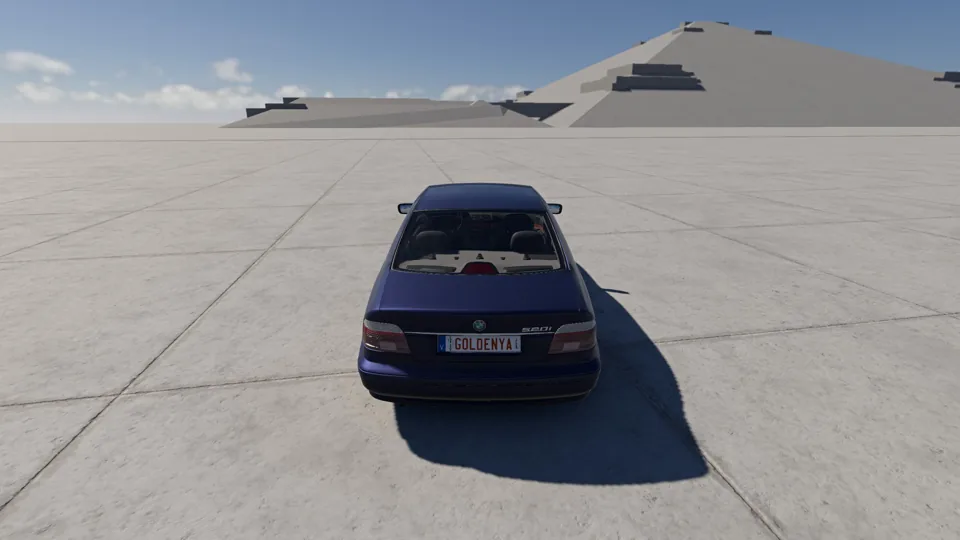
Simulation virtuelle · l'essai 1 du 0 à 100 km/h, sur la carte d'essai du jeu.Modèle 3D : mod BMW 5-Series [E39] de Kenemation pour BeamNG.drive (pièces de pabl0154, ARH3K et autres contributeurs). Ce n'est pas mon travail.
La chaîne, de la mesure à la courbe
1. La mesure du 14/11
Sur la vraie voiture, au SP98, logiciel d'origine : environ 168 ch, 208 à 220 Nm entre 2 625 et 6 375 tr/min (calc_puissance_14-11.py).
2. Le générateur
generer_moteur_e39.py calcule la table de couple que le jeu doit recevoir pour retomber sur cette mesure.
3. La pièce moteur
Un bloc M54B22 ajouté au mod, qui remplace celui d'origine dans la voiture du jeu.
4. La configuration
Une 520i restylée à boîte manuelle avec ce bloc, plus ses variantes : moteur estimé, avec ou sans ABS, pont ouvert ou autobloquant.
5. L'essai piloté
essais.py parle au serveur de pilotage intégré au jeu, en local : il fait apparaître la voiture, la place et lance l'essai.
6. Le chronomètre
Un petit module dans la voiture du jeu (lcmE39Essai) mesure et enregistre à chaque image.
7. Les fichiers et les courbes
Un fichier CSV par essai : temps, vitesse, régime, rapport, couple, distance, vitesse des roues arrière. Puis les courbes de cette page.
Tout tourne sur le PC fixe. Les scripts sont dans un dépôt privé.
La formule du jeu
Le jeu ne lit pas directement une courbe de couple : il la fabrique à partir de plusieurs tables, puis retire les frottements du moteur.
Frottements : 16,2 Nm fixes, plus une part qui croît avec le régime (0,033 Nm par radian par seconde, soit environ 10 Nm à 3 000 tr/min et 17 Nm à 5 000).
Admission et échappement : ceux d'origine du mod. Ils retirent quelques newtons-mètres, de plus en plus avec le régime.
Le calcul à l'envers : pour chaque régime, la table vaut la mesure, plus les frottements, plus ce que retirent l'admission et l'échappement. Exemple à 4 000 tr/min : 213 Nm mesurés + 16,2 + 13,8 de frottements + 1,3 d'admission + 4,9 d'échappement = 249 Nm dans la table. Le multiplicateur d'origine du bloc est neutralisé (1 partout).
Sous 2 500 tr/min, il n'y a pas de mesure : la forme vient du moteur du mod, mise à l'échelle pour rejoindre la mesure.
Les variantes estimées ne changent que le multiplicateur, régime par régime :
v0c : ×1,03 de 2 500 à 4 000 tr/min, puis 1,02 et 1,01, plus rien au-delà de 4 750 tr/min. Hypothèse : environ +1,3 % de couple par degré d'avance ajouté par la v0c.
v0f : ×1,05 de 2 500 à 4 000 tr/min, puis 1,04 à 1,02. Environ 172 ch.
Version complète, injecteurs de M54B30 : ×1,08 de 2 500 à 4 500 tr/min, puis 1,06 et 1,05. Environ 176 à 177 ch.
Ces chiffres restent sous ceux des préparateurs : environ +5 % de puissance et +10 % de couple annoncés par un préparateur MS43 (stages 1 à 3), +13 ch et +15 Nm au banc pour une 330ci à l'E85. Ce sont des estimations, jamais mesurées : le jeu ne simule ni la combustion, ni l'avance, ni l'E85.
Les essais, pas à pas
01 · Immobiliser
Boîte automatique du jeu, voiture tenue au frein à main pendant 2,5 s. Piège : dans ce mode, appuyer sur le frein à l'arrêt engage la marche arrière. D'où le frein à main.
02 · Pleins gaz
Frein à main relâché, accélérateur à fond : le chronomètre part à cet instant. La boîte du jeu passe les rapports seule.
03 · Mesurer
Vitesse de la voiture par rapport au sol, et non celle des roues : au freinage, une roue bloquée lirait 0 alors que la voiture glisse encore. Le module note le 0 à 50, le 0 à 100 et la distance jusqu'à 100 km/h.
04 · Freinage, prévu
Élan jusqu'à 103 km/h, puis frein à fond jusqu'à l'arrêt, sur route sèche et mouillée, avec et sans ABS. Écrit dans le script, pas encore lancé.
05 · Le point de départ
Bug trouvé : le jeu fait réapparaître chaque nouvelle voiture là où était la précédente, en bout de piste, face à un mur. Correction : toutes les voitures sont ramenées au premier point de départ de la série. Pas encore retestée.
Le seul résultat exploitable : dans la simulation virtuelle, la version d'origine fait le 0 à 100 km/h en 8,97 s (0 à 50 km/h en 3,55 s, 145 m parcourus), sur 3 essais identiques au centième. Pour comparer, la fiche technique annonce 9,1 s. C'est un chiffre du jeu, pas une mesure de la vraie voiture.
Les 3 essais du 0 à 100 virtuel
Vitesse relevée dans le jeu, toutes les 0,25 s. Les trois courbes se superposent : au plus 0,1 km/h d'écart. Les deux paliers sont les passages de rapport : 1re vers 2e vers 47 km/h, 2e vers 3e vers 82 km/h, à environ 6 350 tr/min.
Le pont des feux, en simulation
Mon correctif du module d'éclairage tourne aussi dans le jeu, sans aucune voiture réelle. À chaque image, le jeu envoie l'état des commandes (contact, phares, clignotants) à un programme sur le PC, en local par UDP. Ce programme fait tourner le correctif sur un émulateur du processeur du module (un 68HC11), 100 fois par seconde comme le vrai, puis renvoie les feux à allumer. Le jeu les ajoute aux siens : le pont n'éteint jamais un feu du jeu. Étude publique : e39-lcm3-analyse.
Limites : les feux de position du jeu remplacent les angel eyes ; les antibrouillards gauche et droit s'allument ensemble ; le jeu n'a pas de verrouillage centralisé, il se simule par une touche du pont.
Ce qui n'a pas marché
Les essais des variantes v0c et v0f sont partis du mauvais endroit, face au mur (le bug du point de départ). Puis le jeu a planté pendant la version complète.
Il n'existe donc aucune comparaison valable entre les versions.
La route mouillée est une approximation : l'adhérence du sol est multipliée par 0,65, sans eau ni aquaplaning simulés.
La masse, les pneus et la boîte sont ceux du mod, pas des valeurs vérifiées sur ma voiture.
Modèle 3D : mod BMW 5-Series [E39] de Kenemation, auteurs déclarés dans ses fichiers (pabl0154, ARH3K, Diamondback, RifiON).
Mes fichiers : generer_moteur_e39.py, essais.py, le module lcmE39Essai, le journal et les CSV des essais (dépôt privé).
4.7La suite au 25/11/2026
01 · Rouler à l'E85 légalement
Pour rouler à l'E85 en toute légalité, j'envisage un boîtier flex fuel homologué, posé par un installateur agréé, avec mise à jour de la carte grise et déclaration à l'assureur. Les modifications logicielles présentées ici sont un projet d'étude, non homologué, à ne pas reproduire sur un véhicule circulant sur la voie publique.
02 · Entretien
Prochaine vidange un an après celle de fin août 2026 ou 7 500 km plus loin (vers 171 800 km, calcul), au premier atteint ; filtre à essence chaque année ; niveau d'huile chaque mois l'hiver.
Pourquoi cette voie d'étude
Le firmware communautaire MS43X gère le flex fuel, mais supprime l'antidémarrage et n'a pas de base prête pour l'E39 520i : écarté.
Modifier les cartographies d'origine garde l'antidémarrage.
Critère fixé le 14/11 : le calculateur doit rester capable de démarrer au SP98 ou au SP95-E10, même par grand froid. D'où un réglage qui s'adapte au mélange plutôt qu'un réglage fixe pour l'E85.
Le démarrage est réglé pour un mélange intermédiaire, car l'analyse du programme (Ghidra, 15/11) montre que la MUL corrige le fonctionnement et l'après-démarrage, mais pas le lancement ni la pré-injection. Et sous 78 °C, pour une MUL à -12 % ou au-delà, la table C2 ne l'appliquait qu'à 40-60 %, d'où sa modification.
Calcul du mélange et saisons de l'E85
Hypothèses : stœchiométrie 14,7 pour l'essence et 9,0 pour l'éthanol, densités 0,745 et 0,789, base SP98 E5.
Carburant en plus : E10 +1,8 %, E20 +5,7 %, E25 +7,7 %, E30 +9,8 %, E85 +40 %.
E85 en France : 70 à 85 % d'éthanol l'été (1er mai au 30 septembre), 60 à 85 % le reste de l'année (hiver du 1er novembre au 15 mars, et intersaison). La teneur réelle à la pompe n'est pas affichée.
Les points encore ouverts
Pneus arrière à remplacer.
Test de l'alarme d'origine avant tout achat d'antivol.
Capteur de qualité d'air de la climatisation absent : seul le recyclage automatique est perdu.
Partie 5 · Les sources
Comment j'ai trouvé mes informations
Partir de presque rien, vérifier tout.
Il y a quelques mois, je n'y connaissais pas grand-chose aux calculateurs moteur. Ce projet est d'abord une étude : comprendre comment le logiciel d'origine fonctionne, avec quels outils on le lit, et comment vérifier chaque hypothèse par une mesure.
Ce travail m'a pris du temps : je voulais être sûr à 100 % de tout ce que je faisais. Chaque chiffre est revérifié à la source, chaque valeur d'un fichier est validée par moi, une par une, et une copie de l'original est toujours gardée.
Les forums et les tutoriels
6enligne.net : le fil « Faire soi-même sa reprog E85 sur MS43 », lu en entier, avec les retours de ceux qui l'ont fait.
Le wiki ms4x.net : la page du Siemens MS43, les fichiers d'origine et la définition des cartographies du logiciel 430037.
Le tutoriel d'Adrien-24 et le dépôt GitHub de Sheeanatek sur la conversion E85 du M54.